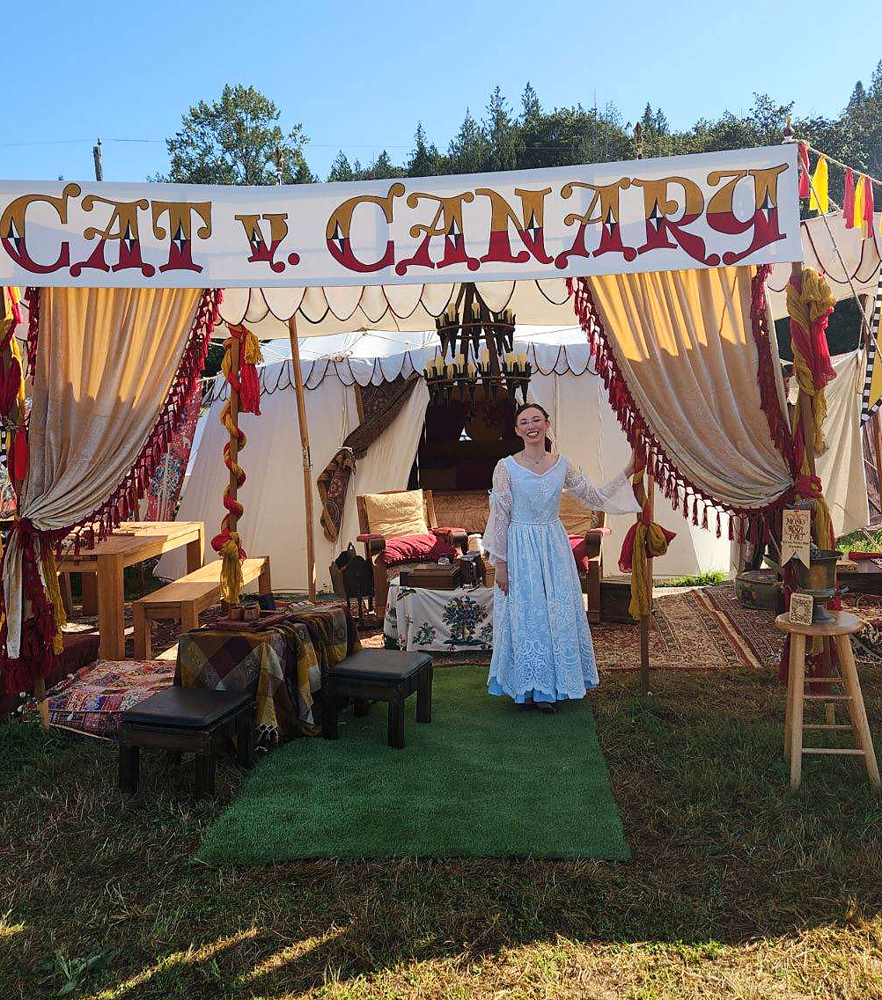
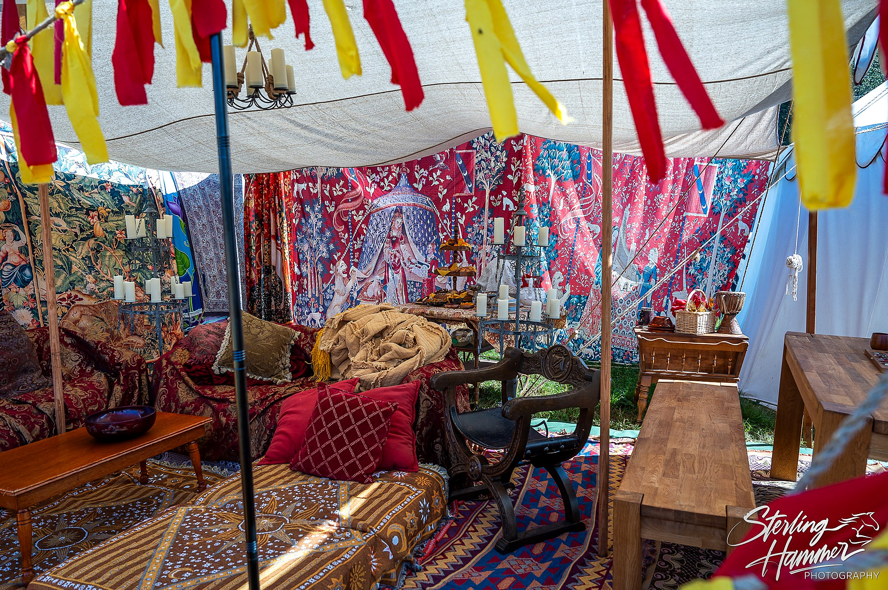
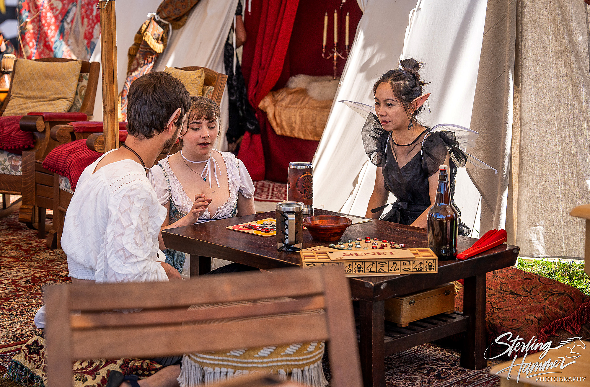
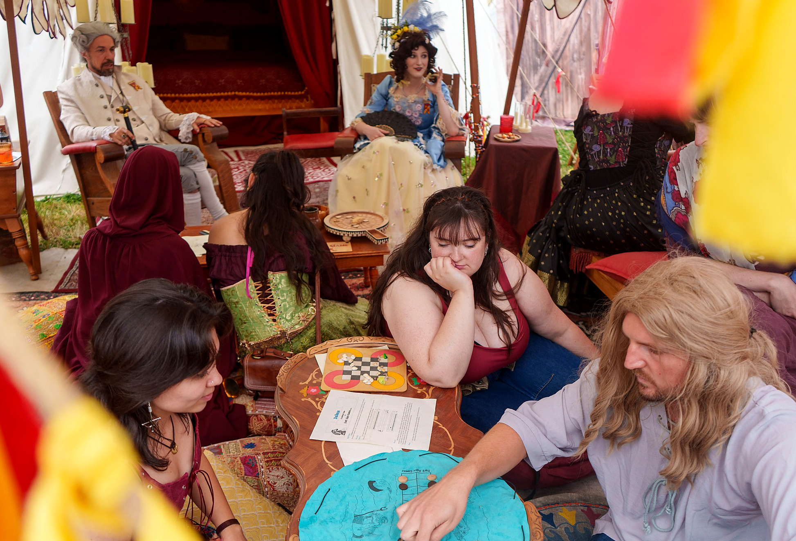

Ancient Egypt
Senet
A game of journeys, luck, and lost rules.

Ancient games. Good company. Step inside our traveling pavilion, discover games from across the world, and stay a while. Everyone is welcome at the table.
Cat v. Canary Guild is the public camp of Cat v. Canary Foundation, a volunteer-run 501(c)(3) nonprofit dedicated to researching, recreating, and sharing historical games.
Our table crosses centuries and cultures. We teach through play, conversation, and living history—not lectures or gatekeeping.
Our story
A game of journeys, luck, and lost rules.
Four thousand years of lively competition.
Roman dice and a contest of fortune.
Chariots and cannons across the river.
An unequal battle and a king's escape.
Build mills and outthink your opponent.

Handmade furnishings, historical games, textiles, lanterns, and carefully collected curiosities make our pavilion a place to linger.
The craftsmanship is part of the invitation.
Meet the makersVisit our traveling historical games pavilion at participating Washington Renaissance fairs. Learn a game, meet new people, or simply enjoy the company.
Get in touch
Our nonprofit keeps the games and hospitality accessible. Donations help us care for equipment, make new games, and welcome more visitors.